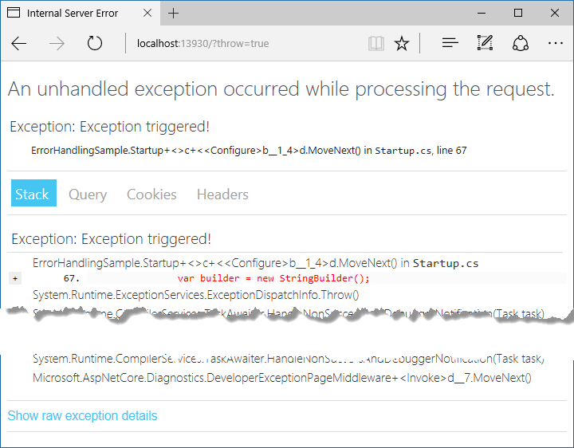

Introduction to Error Handling in ASP.NET Core
By Steve Smith and Tom Dykstra
This article covers common appoaches to handling errors in ASP.NET Core apps.
The developer exception page
To configure an app to display a page that shows detailed information about exceptions, install the Microsoft.AspNetCore.Diagnostics NuGet package and add a line to the Configure method in the Startup class:
public void Configure(IApplicationBuilder app, IHostingEnvironment env, ILoggerFactory loggerFactory)
{
loggerFactory.AddConsole();
env.EnvironmentName = EnvironmentName.Production;
if (env.IsDevelopment())
{
app.UseDeveloperExceptionPage();
}
else
{
app.UseExceptionHandler("/error");
}
Put UseDeveloperExceptionPage before any middleware you want to catch exceptions in, such as app.UseMvc.
Warning
Enable the developer exception page only when the app is running in the Development environment. You don't want to share detailed exception information publicly when the app runs in production. Learn more about configuring environments.
To see the developer exception page, run the sample application with the environment set to Development, and add ?throw=true to the base URL of the app. The page includes several tabs with information about the exception and the request. The first tab includes a stack trace.

The next tab shows the query string parameters, if any.

This request didn't have any cookies, but if it did, they would appear on the Cookies tab. You can see the headers that were passed in the last tab.

Configuring a custom exception handling page
It's a good idea to configure an exception handler page to use when the app is not running in the Development environment.
public void Configure(IApplicationBuilder app, IHostingEnvironment env, ILoggerFactory loggerFactory)
{
loggerFactory.AddConsole();
env.EnvironmentName = EnvironmentName.Production;
if (env.IsDevelopment())
{
app.UseDeveloperExceptionPage();
}
else
{
app.UseExceptionHandler("/error");
}
In an MVC app, don't explicitly decorate the error handler action method with HTTP method attributes, such as HttpGet. Using explicit verbs could prevent some requests from reaching the method.
[Route("/Error")]
public IActionResult Index()
{
// Handle error here
}
Configuring status code pages
By default, your app will not provide a rich status code page for HTTP status codes such as 500 (Internal Server Error) or 404 (Not Found). You can configure the StatusCodePagesMiddleware by adding a line to the Configure method:
app.UseStatusCodePages();
By default, this middleware adds simple, text-only handlers for common status codes, such as 404:

The middleware supports several different extension methods. One takes a lambda expression, another takes a content type and format string.
app.UseStatusCodePages(async context =>
{
context.HttpContext.Response.ContentType = "text/plain";
await context.HttpContext.Response.WriteAsync(
"Status code page, status code: " +
context.HttpContext.Response.StatusCode);
});
app.UseStatusCodePages("text/plain", "Status code page, status code: {0}");
There are also redirect extension methods. One sends a 302 status code to the client, and one returns the original status code to the client but also executes the handler for the redirect URL.
app.UseStatusCodePagesWithRedirects("/error/{0}");
app.UseStatusCodePagesWithReExecute("/error/{0}");
If you need to disable status code pages for certain requests, you can do so:
var statusCodePagesFeature = context.Features.Get<IStatusCodePagesFeature>();
if (statusCodePagesFeature != null)
{
statusCodePagesFeature.Enabled = false;
}
Exception-handling code
Code in exception handling pages can throw exceptions. It's often a good idea for production error pages to consist of purely static content.
Also, be aware that once the headers for a response have been sent, you can't change the response's status code, nor can any exception pages or handlers run. The response must be completed or the connection aborted.
Server exception handling
In addition to the exception handling logic in your app, the server hosting your app performs some exception handling. If the server catches an exception before the headers are sent, the server sends a 500 Internal Server Error response with no body. If the server catches an exception after the headers have been sent, the server closes the connection. Requests that aren't handled by your app are handled by the server. Any exception that occurs is handled by the server's exception handling. Any configured custom error pages or exception handling middleware or filters don't affect this behavior.
Startup exception handling
Only the hosting layer can handle exceptions that take place during app startup. You can configure how the host behaves in response to errors during startup using captureStartupErrors and the detailedErrors key.
Hosting can only show an error page for a captured startup error if the error occurs after host address/port binding. If any binding fails for any reason, the hosting layer logs a critical exception, the dotnet process crashes, and no error page is displayed.
ASP.NET MVC error handling
MVC apps have some additional options for handling errors, such as configuring exception filters and performing model validation.
Exception Filters
Exception filters can be configured globally or on a per-controller or per-action basis in an MVC app. These filters handle any unhandled exception that occurs during the execution of a controller action or another filter, and are not called otherwise. Learn more about exception filters in Filters.
Tip
Exception filters are good for trapping exceptions that occur within MVC actions, but they're not as flexible as error handling middleware. Prefer middleware for the general case, and use filters only where you need to do error handling differently based on which MVC action was chosen.
Handling Model State Errors
Model validation occurs prior to each controller action being invoked, and it is the action method’s responsibility to inspect ModelState.IsValid and react appropriately.
Some apps will choose to follow a standard convention for dealing with model validation errors, in which case a filter may be an appropriate place to implement such a policy. You should test how your actions behave with invalid model states. Learn more in Testing controller logic.